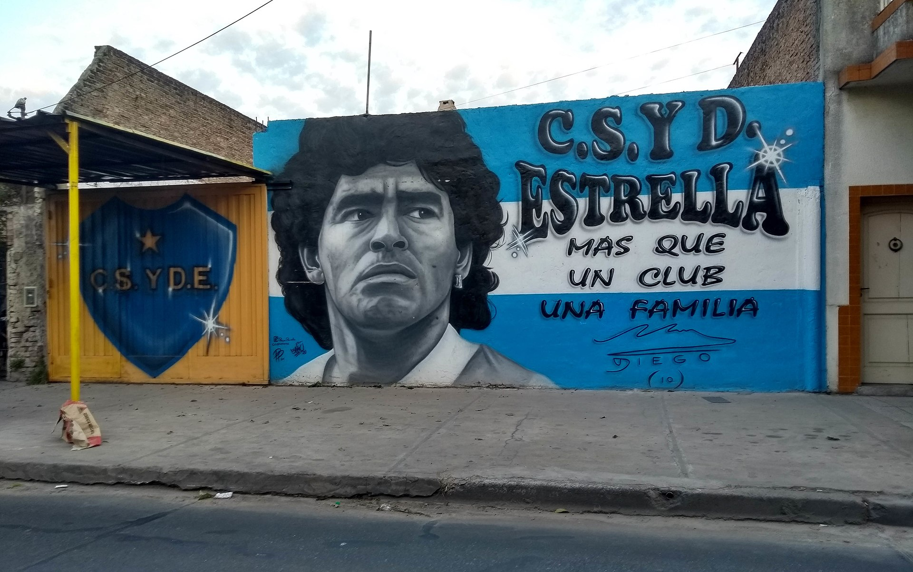

Diego Armando Maradona
.jpeg)
international Career:
During his time with the Argentina national team, Maradona scored 34 goals in 91 appearances. He made his full international debut at age 16, against Hungary, on 27 February 1977. Maradona was left off the Argentine squad for the 1978 World Cup on home soil by coach César Luis Menotti who felt he was too young at age 17.
At age 18, Maradona played the 1979 FIFA World Youth Championship in Japan and emerged as the star of the tournament, shining in Argentina's 3–1 final win over the Soviet Union, scoring a total of six goals in six appearances in the tournament. On 2 June 1979, Maradona scored his first senior international goal in a 3–1 win against Scotland at Hampden Park.
He went on to play for Argentina in two 1979 Copa América ties during August 1979, a 2–1 loss against Brazil and a 3–0 win over Bolivia in which he scored his side's third goal.
Speaking thirty years later on the impact of Maradona's performances in 1979, FIFA President Sepp Blatter stated, "Everyone has an opinion on Diego Armando Maradona, and that's been the case since his playing days. My most vivid recollection is of this incredibly gifted kid at the second FIFA U-20 World Cup in Japan in 1979. He left everyone open-mouthed every time he got on the ball."
Maradona and his compatriot Lionel Messi are the only players to win the Golden Ball at both the FIFA U-20 World Cup and FIFA World Cup. Maradona did so in 1979 and 1986, which Messi emulated in 2005 and 2014 (and again in 2022).
Maradona played his first World Cup tournament in 1982 in his new country of residence, Spain.
Argentina played Belgium in the opening game of the 1982 Cup at the Camp Nou in Barcelona. Maradona did not perform to expectations, as Argentina, the defending champions, lost 1–0. Although the team convincingly beat both Hungary and El Salvador in Alicante to progress to the second round, there were internal tensions within the team, with the younger, less experienced players at odds with the older, more experienced players.
With a team that also included such players as Mario Kempes, Osvaldo Ardiles, Ramón Díaz, Daniel Bertoni, Alberto Tarantini, Ubaldo Fillol, and Daniel Passarella, the Argentine side was defeated in the second round by Brazil and by eventual winners Italy. The Italian match is renowned for Maradona being aggressively man-marked by Claudio Gentile, as Italy beat Argentina at the Sarrià Stadium in Barcelona, 2–1.
Maradona played in all five matches without being substituted, scoring twice against Hungary.
He was fouled repeatedly in all five games and particularly in the last one against Brazil at the Sarrià, a game that was blighted by poor officiating and violent fouls. With Argentina already down 3–0 to Brazil, Maradona's temper eventually got the better of him and he was sent off with five minutes remaining for a serious retaliatory foul against Batista.
1986 World Cup:
.jpg) Maradona captained the Argentine national team to victory in the 1986 World Cup in Mexico, winning the final in Mexico City against West Germany. Throughout the tournament, Maradona asserted his dominance and was the most dynamic player of the competition.
Maradona captained the Argentine national team to victory in the 1986 World Cup in Mexico, winning the final in Mexico City against West Germany. Throughout the tournament, Maradona asserted his dominance and was the most dynamic player of the competition.
He played every minute of every Argentina game, scoring five goals and making five assists; three of the assists came in the opening match against South Korea at the Olímpico Universitario Stadium in Mexico City.
His first goal of the tournament came against Italy in the second group game in Puebla. Argentina eliminated Uruguay in the first knockout round in Puebla, setting up a match against England at the Azteca Stadium, also in Mexico City.
After scoring two contrasting goals in the 2–1 quarter-final win against England, his legend was cemented.
The majesty of his second goal and the notoriety of his first led to the French newspaper L'Équipe describing Maradona as "half-angel, half-devil". This match was played with the background of the Falklands War between Argentina and the United Kingdom.
Replays showed that the first goal was scored by striking the ball with his hand. Maradona was coyly evasive, describing it as "a little with the head of Maradona and a little with the hand of God". It became known as the"Hand of God" .
Ultimately, on 22 August 2005, Maradona acknowledged on his television show that he had hit the ball with his hand purposely, and no contact with his head was made, and that he immediately knew the goal was illegitimate. This became known as an international fiasco in World Cup history. The goal stood, much to the wrath of the English players.
Maradona's second goal, just four minutes after the hotly disputed hand-goal, was later voted by FIFA as the greatest goal in the history of the World Cup.
He received the ball in his own half, swivelled around and with 11 touches ran more than half the length of the field, dribbling past five English outfield players (Peter Beardsley, Steve Hodge, Peter Reid, Terry Butcher, and Terry Fenwick) before he left goalkeeper Peter Shilton on his backside with a feint, and slotted the ball into the net.
This goal was voted "Goal of the Century" in a 2002 online poll conducted by FIFA. A 2002 Channel 4 poll in the UK saw his performance ranked number 6 in the list of the 100 Greatest Sporting Moments.
Maradona followed this with two more goals in a semi-final match against Belgium at the Azteca, including another virtuoso dribbling display for the second goal.
In the final match, West Germany attempted to contain him by double-marking him, but in the 84th minute he nevertheless found space past West German player Lothar Matthäus to give the final pass to Jorge Burruchaga for the winning goal. Argentina beat West Germany 3–2 in front of 115,000 fans at the Azteca with Maradona lifting the World Cup as captain.

During the tournament, Maradona attempted or created more than half of Argentina's shots, attempted a tournament-best 90 dribbles—three times more than any other player—and was fouled a record 53 times, winning his team twice as many free kicks as any player.
Maradona scored or assisted 10 of Argentina's 14 goals (71%), including the assist for the winning goal in the final, ensuring that he would be remembered as one of the greatest names in football history.
By the end of the World Cup, Maradona went on to win the Golden Ball as the best player of the tournament by unanimous vote and was widely regarded to have won the World Cup virtually single-handedly, something that he later stated he did not entirely agree with.
Zinedine Zidane, watching the 1986 World Cup as a 14-year-old, stated Maradona "was on another level". In a tribute to him, Azteca Stadium authorities built a statue of him scoring the "Goal of the Century" and placed it at the entrance of the stadium.
Regarding Maradona's performance at the 1986 World Cup in Mexico, in 2014, Roger Bennett of ESPN FC described it as "the most virtuoso performance a World Cup has ever witnessed," while Kevin Baxter of the Los Angeles Times called it "one of the greatest individual performances in tournament history," with Steven Goff of The Washington Post dubbing his performance as "one of the finest in tournament annals." In 2002, Russell Thomas of The Guardian described Maradona's second goal against England in the 1986 World Cup quarter-finals as "arguably the greatest individual goal ever."
In a 2009 article for CBC Sports, John Molinaro described the goal as "the greatest ever scored in the tournament – and, maybe, in soccer." In a 2018 article for Sportsnet, he added: "No other player, not even Pel[é] in 1958 nor Paolo Rossi in 1982, had dominated a single competition the way Maradona did in Mexico.
" He also went on to say of Maradona's performance: "The brilliant Argentine artist single-handedly delivered his country its second World Cup." Regarding his two memorable goals against England in the quarter-finals, he commented: "Yes, it was Maradona's hand, and not God's, that was responsible for the first goal against England. But while the 'Hand of God' goal remains one of the most contentious moments in World Cup history, there can be no disputing that his second goal against England ranks as the greatest ever scored in the tournament. It transcended mere sports – his goal was pure art.